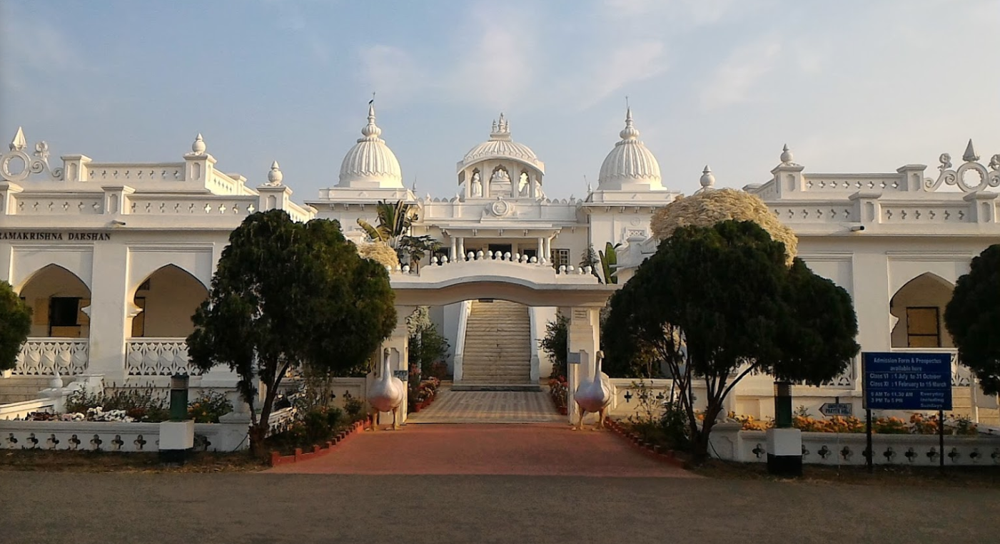

I received my primary education in my hometown only. When I was in fifth standard, I appeared in the entrance examination of Ramakrishna Mission Vidyapith, Deoghar in 2012. I was lucky to get selected in that. It is a very fine institution in the spiritual land of Lord Shiva, Deoghar. This institute is a branch of Ramakrishna Math and Ashram, headquartered at Belur Math, Howrah, West Bengal. It was started by Swami Vivekananda. This School works towards the all round development of the students and has very food facilities for the same. I made many good friends there. I appeared for class 10th board examination in 2017. I got 10 CGPA int that exam. After that I started preparing for JEE Main and Advanced. I took admission in Holy Cross public school in my hometown for the remaining two years in school life. I appeared for class 12th board exams in 2019 from there. I got 96.2% marks in that. I qualified JEE Main and Advanced in the year 2019 with a decent rank. I got admission in IIT Roorkee in the CSE Department, where I am currently studying.
